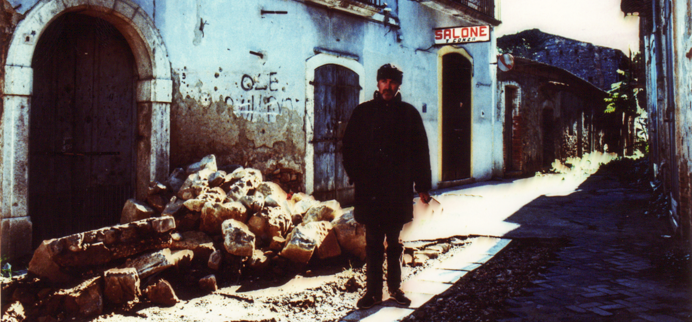
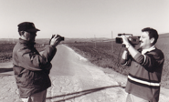
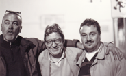
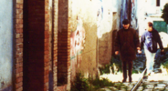

Lama Film

Sinossi
Di mestiere faccio il paesologo è un film documentario su uno scrittore particolare e “nuovo” nel panorama letterario e poetico italiano.
Franco Arminio vive e lavora nell’Irpinia d’oriente. Si è inventata una nuova forma di letteratura e di disciplina: “la paesologia”, una disciplina indispensabile, ma inesistente. Non riesce a vivere a Bisaccia, e non riesce nemmeno ad andare via. Gira nei paesi abbandonati, e sperduti, quelli dove a vivere sono rimasti i più deboli, perché la maggior parte sono andati via a “cercare la vita”. E’ un pescatore di desolazione, e nel suo peregrinare è alla ricerca del puro e dell’ingenuità profonda di un mondo completamente cambiato dopo il terremoto del 1980.
Il film è un viaggio nella vita e nel mondo di Arminio, un collage di incontri dello scrittore nei paesi dell’Irpinia e della Lucania, a cui si aggiungono le sue riflessioni e i suoi pensieri sui piccoli paesi. Arminio ha la grande capacità di vivere e immedesimarsi nella gente che incontra. Con un atteggiamento misto di cinismo, grottesco, e analisi lucida riesce a capire e a mostrare un mondo che ormai nessuno racconta più. Ci fa capire con profonda ironia, che in fondo questi posti desolati andrebbero premiati, per non aver partecipato al saccheggio culturale e sociale che c’è stato nell’occidente e ci invita ad andare in questi paesi, prima che sia troppo tardi, “prima che il proiettore si spenga”. Nel suo viaggio tra piazze vuote, bar impolverati e strade deserte, incontra una collana di personaggi che andrebbero ascoltati, è un pellegrinaggio tra le parole di chi non si racconta da anni. E così a Santomenna, incontra quattro persone sedute in piazza, che aspettano qualcuno che li faccia parlare: un emigrante che viene dal Venezuela, un altro che ha vissuto negli Stati Uniti ed è ritornato al paese, un vecchio contadino. E dall’incontro con queste anime solitarie, scaturisce un’analisi lucida e spietata sulla scomparsa del mondo contadino; da qui un viaggio che lo porterà nei bar in cui si vende anche la pasta e il tonno, nel mercato del paese, nelle strade in cui ad abitare sono rimasti anziani e persone sole. Ma è un approccio che avviene sempre con amore e con passione, con la consapevolezza che lo scrittore sta vedendo quei posti forse sull’orlo della loro scomparsa. Per questo la sua analisi spesso diventa ironica e a tratti cinica, che fa scrivere a Belpoliti che “Arminio è lo scrittore più comico che esista”. Il suo in fondo è un grido di allarme e di aiuto, per evitare che i piccoli paesi diventino manicomi all’aperto o peggio ancora cimiteri degli elefanti. E la sua poetica è a metà tra il cinismo di Giustino Fortunato e la speranza e l’utopia di Guido Dorso e Danilo Dolci.
Come dice lo stesso Arminio alla fine del film il suo “è un dolore che combatte”, il dolore per un mondo che si ama profondamente, e che è in via di estinzione.
produzione: Lama Film
produttore: Cesare Apolito
scritto e diretto da: Andrea D’Ambrosio
interpreti: Franco Arminio
fotografia: Luca Alzani
montaggio: Marco Chimenti
montaggio del suono: Matteo Pedani
musiche originali : Paranza Vibes - edizioni Warner Music Chappell
formato di ripresa: MiniDV PAL
Norm: PAL 4:3
Audio: Stereo RT LT
anno: 2010


Di mestiere faccio il paesologo






curioso e affascinante, il documentario accompagna Arminio nei suoi peregrinaggi. Un viaggio condotto con ironia, un lavoro prezioso che merita di essere visto.
Carlo Griseri - Trento Film Festival - Maggio 2010